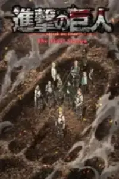
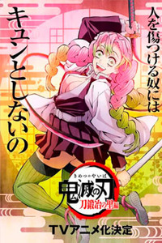
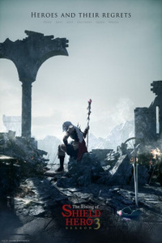
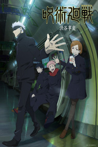
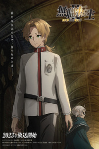
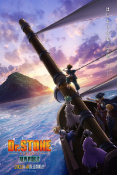

|
Войти |
|
Войти |
Анонсы аниме |
|  |
Атака титанов: Финал - Заключительная глава Описание сюжета В течение многих лет Ди Цюжэнь пытается найти следы внеземной жизни, веря в то, что где-то существуют разумные инопланетные существа, готовые поделиться своими секретами с человечеством. Его окружают единомышленники, которые поддерживают его идею и мечтают вместе найти инопланетян в космосе. Им так и не удалось увидеть хотя бы крошечную частицу жизни во Вселенной, но они продолжают поиски. Ди Чьюжен не знает, что инопланетяне уже здесь, живут среди нас и разговаривают с ним каждый день. Члены клуба на самом деле являются инопланетянами, которые пытаются скрыть свою истинную сущность и изучить окружающий мир. Но их планы вот-вот будут сорваны, когда ди Чужен случайно узнает правду и попытается раскрыть ее своим товарищам. Сможет ли он убедить их в том, что члены его клуба на самом деле инопланетяне? Статус: анонс Год выхода: 2023 |
|  |
Клинок, рассекающий демонов: Деревня кузнецов Описание сюжета Тандзиро, Недзуко, Иноске и Зеницу смогли пережить невероятно сложную битву, в ходе которой главный герой лишился своего клинка, по сколько не смог совладать со своей силой и теперь ему нужен новый. Тандзиро и Недзуко держат дорогу в деревню ремесленников, для того что бы получить новый клинок. Так совпало, что в деревню так же прибыли ещё два "столпа", Муитиро Токито и Мицури Канродзи, которые тут находятся с той же целью что и Тандзиро. Деревня была хорошо скрыта и защищена в горах, но как оказалось демоны смогли добраться и сюда, причем не самые простые, а представители "Двенадцати лун", наших героев вновь ожидает невероятно сложная схватка. Статус: анонс Год выхода: на апрель 2023 |
|  |
Восхождение героя щита Описание сюжета Главного героя — Наофуми Иватани призвали в параллельный мир в виде героя, но не его одного, призвано было четыре человека и каждому дано своё особенное оружие. Всего их было так же четыре: меч, лук, копье и щит. По началу всё шло хорошо и все любили Наофуми и других героев, но затем почему-то местные сочли что щит — бесполезен и начали строить ему всякие козни. Главному герою пришлось столкнуться с несправедливостью, жестокостью и предательствами, ведь его предала его первая спутница и по совместительству дочь короля. Но Герой Щита твёрдо решил не сворачивать со своего пути, ведь их призвали спасти этот мир, а он не привык бросать слабых в беде. Наофуми старался развиваться и достиг больших высот и смог всем доказать, что щит не менее слаб, а даже сильнее чем другие виды оружия и обрёл огромную популярность и вернул свою честь. В ходе своих приключений ему пришлось узнать, что те с кем он сражался оказались такими же людьми призванными из его мира, поэтому ему ещё предстоит заняться разгадкой этого мира. Статус: анонс Год выхода: 2023 |
|  |
Магическая битва 2 Описание сюжета Сюжет вращается вокруг парня по имени Итадори, который жил обычной школьной жизнью, но случилось так, что он проглотил проклятый палец древнего могущественного колдуна и теперь ему приходится уживаться с ним в одном теле, но взамен Итадори может использовать часть его силы. В конце первого сезона Итадори вместе с Нобарой смогли одолеть проклятий особого ранга Кечизу и Эсо, которые были родственниками. Чозо, старший из них, узнал о случившемся и жаждет мести. После Итадори вместе с Нобарой нашли Мегуми, который был знатно потрёпан в сражении. Когда Мегуми попытался отдать Итадори ещё один проклятый палец, то Сукуна сразу съел его. После их доблестной победы, слухи о трех первокурсниках которые одолели проклятия особого уровня быстро распотранились, а от чего были рекомендованы к повышению до первого ранга. Статус: анонс Год выхода: на июль 2023 |
|  |
Реинкарнация безработного: История о приключениях в другом мире 2 Описание сюжета Продолжение приключений Рудеуса в новом мире. Рудеус — родился в новом мире, после того как был сбит грузовиком на смерть в своем мире, где он был отаку-неудачником, которого ненавидели даже его собственные родители. Ему повезло, ведь он начал новую жизнь с нуля, будучи новорожденным ребёнком, но при этом сумел сохранить все воспоминания из прошлой жизни, а поэтому решил ни в коем случае не допустить печального исхода и в этот раз сделать всё правильно. Статус: анонс Год выхода: 2023 |
|  |
Доктор Стоун: Новый мир Описание сюжета Ужасная катастрофа изменила жизнь на Земле. В одночасье все жители планеты превратились в каменные статуи. Прошло больше тысячи лет прежде чем ученик старшей школы Сэнку Исигами вновь превратился в человека. Пытаясь найти ответы на множество вопросов герой начинает искать таких же, как он, что чудом пробудились. Благодаря высокому IQ Сэнку создает огромную лабораторию где вместе с единомышленниками пытается создать чудо-эликсир способный освободить человечество от каменных работ. Мало того что задача не из простых, так еще палки в колеса вставляет старый знакомый. Бывший школьный хулиган Цукаса Сисио очень доволен тем что почти все люди окаменели и на Земле нет ни одного взрослого чтобы стал отчитывать его за плохое поведение. Он быстро обзаводится единомышленниками которые так же не хотят возвращать всех людей к жизни. Статус: анонс Год выхода: на апрель 2023 |